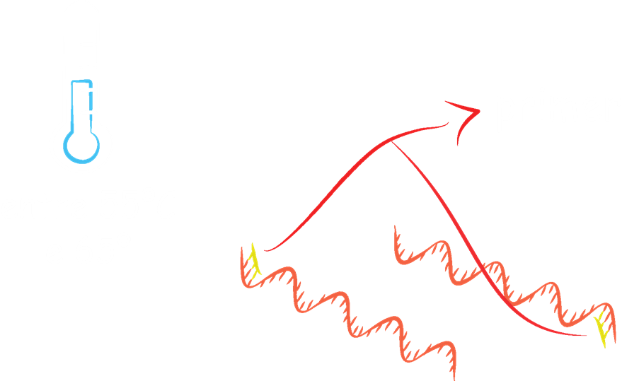
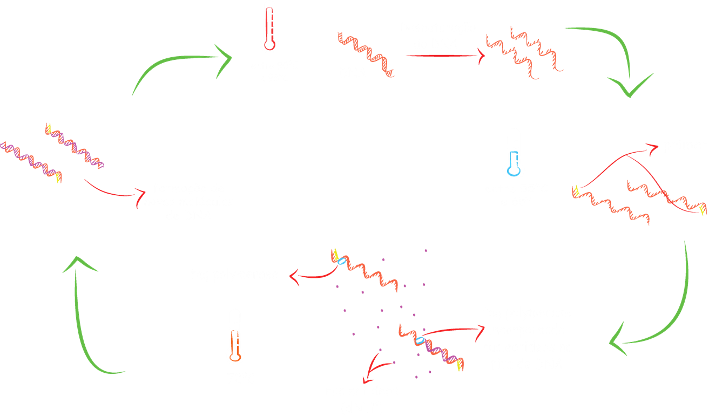
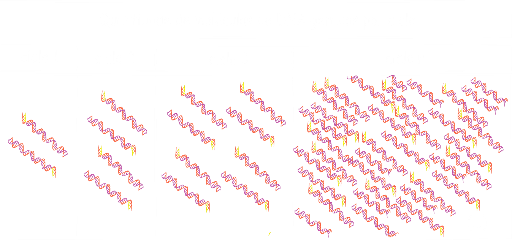

A sigla PCR vem do inglês Polymerase Chain Reaction e é uma técnica de biologia molecular que permite fazer milhões de cópias de um trecho do DNA específico de qualquer organismo, seja ele um vírus, uma bactéria, uma planta ou um animal!!

A técnica de PCR imita, de maneira simplificada, o processo de replicação do DNA que acontece antes da divisão celular. A PCR acontece em etapas que são definidas pela temperatura a qual a reação é submetida e que vão se repetindo por cerca de 30 ciclos.

Na primeira etapa, coloca-se em um pequeno tubo de plástico, como este que está em minha mão, todos os ingredientes necessários para fazer milhares de cópias de um trecho de DNA de interesse. São eles:

o DNA que foi extraído (chamado DNA molde);
os nucleotídeos de Adenina, Citosina, Guanina e Timina (o conjunto é chamado dNTP);
os oligonucleotídeos iniciadores (ou primers) que vão definir o trecho de DNA que se quer copiar;
a Taq Polymerase, a enzima responsável por "montar" a nova molécula de DNA a partir dos ingredientes citados anteriormente.

Na primeira fase, a reação é exposta a uma temperatura entre 90ºC e 96ºC, para que ocorra desnaturação e separação das fitas do DNA molde.

Na segunda etapa, ocorre um resfriamento (temperatura entre 55 ºC e 65 º C) permitindo que os primers liguem-se nas regiões complementares na fita do DNA molde.

Na terceira etapa (temperatura de 72ºC) ocorre a incorporação de novos nucleotídeos pela taq polymerase, produzindo uma nova molécula de dupla-fita.

Estas três etapas de variação da temperatura vão então se repetindo por cerca de 30 ciclos

Estima-se que, a partir de uma única molécula de DNA, formam-se 100 bilhões de cópias idênticas do trecho desejado! Não é incrível?!

Como qualquer teste diagnóstico, os diagnósticos moleculares possuem uma série de vantagens e desvantagens. Vamos ver algumas:
Vantagens
Detecção segura dos patógenos mesmo em baixas concentrações
Obtenção de DNA de diversos tipos de tecidos
Possibilidade de detecção independente da viabilidade do patógeno
Alta especificidade, rapidez e confiabilidade
Desvantagens
Possibilidade de contaminação da amostra
Presença de inibidores
Degradação das moléculas analisadas
Custos elevados
Necessidade de padronização